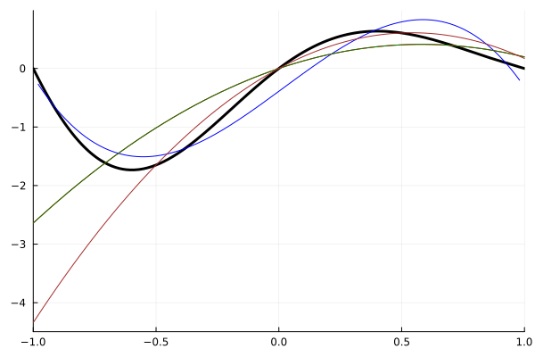
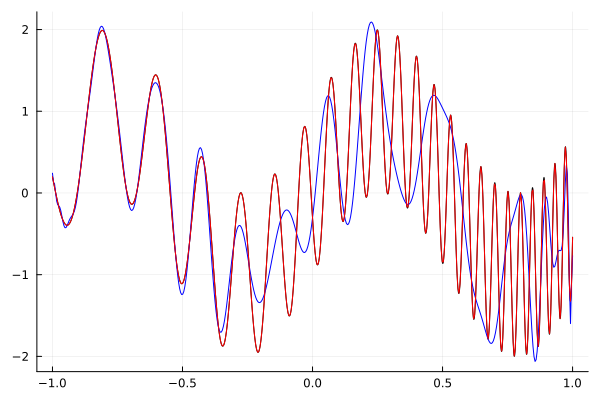
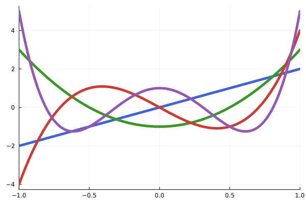

Examples
Construction
This package provides several types to represent polynomials relative to different bases from the standard polynomial basis, 1,x,x², x³ etc.
For example, the Legendre polynomials are a collection of polynomials on [-1,1]. The first few may be seen through:
julia> using Polynomials, SpecialPolynomials
julia> p0 = Legendre([1])
Legendre(1⋅P₀(x))
julia> p1 = Legendre([0,1])
Legendre(1⋅P₁(x))
julia> p2 = Legendre([0,0,1])
Legendre(1⋅P₂(x))
julia> p3 = Legendre([0,0,0,1])
Legendre(1⋅P₃(x))A plot recipe is useful for a graphical view:
n = 6
ψ₁, ψ₂, ψ₃, ψ₄, ψ₅, ψ₆ = basis.(Legendre, 0:n - 1)
kw = (xlabel="r", ylabel="ψₙ(r)")
sps = [
plot( ψ₁, label="ψ₁(r)"; kw...),
plot( ψ₂, label="ψ₂(r)"; kw...),
plot( ψ₃, label="ψ₃(r)"; kw...),
plot( ψ₄, label="ψ₄(r)"; kw...),
plot( ψ₅, label="ψ₅(r)"; kw...),
plot( ψ₆, label="ψ₆(r)"; kw...),
]
plot(sps..., layout=(3, 2))Plot{Plots.GRBackend() n=6}The coefficients, e.g., [0,0,0,1] indicate a polynomial 0⋅p0 + 0⋅p1 + 0⋅p2 + 1⋅p3. The show method expresses these polynomials relative to their bases. More familiar expressions are seen by conversion to the standard basis. For example:
julia> convert.(Polynomial, [p0,p1,p2,p3])
4-element Vector{Polynomial{Float64, :x}}:
Polynomial(1.0)
Polynomial(1.0*x)
Polynomial(-0.5 + 1.5*x^2)
Polynomial(-1.5*x + 2.5*x^3)Polynomial instances are callable. We have, for example, to evaluate a polynomial at a set of points:
julia> p3.([1/4, 1/2, 3/4])
3-element Vector{Float64}:
-0.3359375
-0.4375
-0.0703125Conversion can also be achieved through polynomial evaluation, using a variable x in the Polynomial basis:
julia> x = variable(Polynomial)
Polynomial(1.0*x)
julia> p3(x)
Polynomial(-1.5*x + 2.5*x^3)Representation in another basis can be achieved this way:
julia> u = variable(ChebyshevU)
ChebyshevU(0.5⋅U₁(x))
julia> p3(u)
ChebyshevU(- 0.125⋅U₁(x) + 0.3125⋅U₃(x))For most of the orthogonal polynomials, a conversion from the standard basis is provided, and a conversion between different parameter values for the same polynomial type are provided. Conversion methods between other polynomial types are not provided, but either evaluation, as above, or conversion through the Polynomial type is possible. As possible, for the orthogonal polynomial types, conversion utilizes the FastTransforms package; this package can handle conversion between polynomials with very high degree.
For the basis functions, the basis function can be used:
julia> h0,h1,h2,h3 = basis.(Hermite, 0:3);
julia> x = variable();
julia> h3(x)
Polynomial(-12.0*x + 8.0*x^3)For numeric evaluation of just a basis polynomial of a classical orthogonal polynomial system, the Basis constructor provides a direct evaluation without the construction of an intermediate polynomial:
julia> Basis(Hermite, 3)(0.5)
-5.0!!! note "Evaluation with Basis is not robust The evaluation of a Basis object relies on a classical hypergeometric representation and for values of $n$ as small as $30$ can be very susceptible to round off error.
If the coefficients of a polynomial relative to the polynomial type are known, they can be directly passed to the constructor:
julia> Laguerre{0}([1,2,3])
typename(Laguerre){0}(1⋅L₀(x) + 2⋅L₁(x) + 3⋅L₂(x))Some polynomial types are parameterized, as above. The parameters are passed to the type, as in this example:
julia> Jacobi{1/2, -1/2}([1,2,3])
typename(Jacobi){0.5,-0.5}(1⋅Jᵅᵝ₀(x) + 2⋅Jᵅᵝ₁(x) + 3⋅Jᵅᵝ₂(x))The polynomial types specified above are orthogonal, meaning the inner product of different basis vectors will be 0. For example:
julia> using QuadGK
julia> P = Legendre
Legendre
julia> p4,p5 = basis.(P, [4,5])
2-element Vector{Legendre{Float64, :x}}:
Legendre(1.0⋅P₄(x))
Legendre(1.0⋅P₅(x))
julia> wf, dom = SpecialPolynomials.weight_function(P), Polynomials.domain(P);
julia> quadgk(x -> p4(x) * p5(x) * wf(x), first(dom), last(dom))
(0.0, 0.0)The unexported innerproduct will compute this as well, without the need to specify the domain or weight function, which can be gleaned from the type.
julia> SpecialPolynomials.innerproduct(P, p4, p5)
-1.5309832087675112e-16Polynomial methods
For each polynomial type, this package implements as many of the methods for polynomials defined in Polynomials, as possible.
Evaluation
Evaluation, as seen, is done through making polynomial objects callable:
julia> P = Chebyshev
Chebyshev
julia> p = P([1,2,3,4])
Chebyshev(1⋅T₀(x) + 2⋅T₁(x) + 3⋅T₂(x) + 4⋅T₃(x))
julia> p(0.4)
-4.016By default, for classical orthogonal polynomials, the Clenshaw reduction formula is used. For such polynomials, an alternative is to use the hypergeometric formulation. (The evaluation Basis(P,n)(x) uses this.) There is an unexported method to compute through this means:
julia> SpecialPolynomials.eval_hyper(P, coeffs(p), 0.4)
-4.016Arithmetic
For example, basic arithmetic operations are defined:
julia> P = ChebyshevU
ChebyshevU
julia> p,q = P([1,2,3,4]), P([-2,0,1,2])
(ChebyshevU(1⋅U_0(x) + 2⋅U_1(x) + 3⋅U_2(x) + 4⋅U_3(x)), ChebyshevU(- 2⋅U_0(x) + 1⋅U_2(x) + 2⋅U_3(x)))
julia> p + 1
ChebyshevU(2⋅U_0(x) + 2⋅U_1(x) + 3⋅U_2(x) + 4⋅U_3(x))
julia> -p
ChebyshevU(- 1⋅U_0(x) - 2⋅U_1(x) - 3⋅U_2(x) - 4⋅U_3(x))
julia> p + q
ChebyshevU(- 1⋅U_0(x) + 2⋅U_1(x) + 4⋅U_2(x) + 6⋅U_3(x))
julia> p*q
ChebyshevU(9⋅U_0(x) + 8⋅U_1(x) + 10⋅U_2(x) + 6⋅U_3(x) + 15⋅U_4(x) + 10⋅U_5(x) + 8⋅U_6(x))
julia> p^2
ChebyshevU(30⋅U_0(x) + 40⋅U_1(x) + 51⋅U_2(x) + 44⋅U_3(x) + 41⋅U_4(x) + 24⋅U_5(x) + 16⋅U_6(x))Multiplication formulas may not be defined for each type, and a fall back may be used where the multiplication is done with respect to the standard basis and the answer re-represented:
julia> P = Jacobi{1/2, -1/2}
Jacobi{0.5, -0.5}
julia> p,q = P([1,2]), P([-2,1])
(typename(Jacobi){0.5,-0.5}(1⋅Jᵅᵝ₀(x) + 2⋅Jᵅᵝ₁(x)), typename(Jacobi){0.5,-0.5}(- 2⋅Jᵅᵝ₀(x) + 1⋅Jᵅᵝ₁(x)))
julia> p * q
typename(Jacobi){0.5,-0.5}(- 1.5⋅Jᵅᵝ₀(x) - 2.0⋅Jᵅᵝ₁(x) + 1.3333333333333333⋅Jᵅᵝ₂(x))Derivatives and integrals
The classic continuous orthogonal polynomials have the derivative and integrate methods defined:
julia> P = ChebyshevU{Float64}
ChebyshevU{Float64}
julia> p = P([1,2,3])
ChebyshevU(1.0⋅U₀(x) + 2.0⋅U₁(x) + 3.0⋅U₂(x))
julia> dp = derivative(p)
ChebyshevU(4.0⋅U₀(x) + 12.0⋅U₁(x))
julia> convert.(Polynomial, (p, dp))
(Polynomial(-2.0 + 4.0*x + 12.0*x^2), Polynomial(4.0 + 24.0*x))
julia> P = Jacobi{1//2, -1//2}
Jacobi{1//2, -1//2}
julia> p,q = P([1,2]), P([-2,1])
(typename(Jacobi){1//2,-1//2}(1⋅Jᵅᵝ₀(x) + 2⋅Jᵅᵝ₁(x)), typename(Jacobi){1//2,-1//2}(- 2⋅Jᵅᵝ₀(x) + 1⋅Jᵅᵝ₁(x)))
julia> p * q # as above, only with rationals for parameters
typename(Jacobi){1//2,-1//2}(- 1.5⋅Jᵅᵝ₀(x) - 2.0⋅Jᵅᵝ₁(x) + 1.3333333333333333⋅Jᵅᵝ₂(x))
julia> P = Jacobi{1//2, 1//2}
Jacobi{1//2, 1//2}
julia> p = P([1,2,3])
typename(Jacobi){1//2,1//2}(1⋅Jᵅᵝ₀(x) + 2⋅Jᵅᵝ₁(x) + 3⋅Jᵅᵝ₂(x))
julia> dp = derivative(p)
typename(Jacobi){1//2,1//2}(3.0⋅Jᵅᵝ₀(x) + 10.0⋅Jᵅᵝ₁(x))
julia> integrate(p)
typename(Jacobi){1//2,1//2}(0.24999999999999994⋅Jᵅᵝ₁(x) + 0.6⋅Jᵅᵝ₂(x) + 0.5714285714285714⋅Jᵅᵝ₃(x))
julia> integrate(p, 0, 1)
3.125Conversion
Expressing a polynomial in type P in type Q is done through several possible means:
julia> P,Q = Gegenbauer{1//3}, Gegenbauer{2//3}
(Gegenbauer{1//3}, Gegenbauer{2//3})
julia> p = P([1,2,3.0])
typename(Gegenbauer){1//3}(1.0⋅Cᵅ₀(x) + 2.0⋅Cᵅ₁(x) + 3.0⋅Cᵅ₂(x))
julia> convert(Q, p)
typename(Gegenbauer){2//3}(0.8⋅Cᵅ₀(x) + 1.0⋅Cᵅ₁(x) + 1.2⋅Cᵅ₂(x))
julia> p(variable(Q))
typename(Gegenbauer){2//3}(0.7999999999999999⋅Cᵅ₀(x) + 1.0⋅Cᵅ₁(x) + 1.1999999999999997⋅Cᵅ₂(x))
julia> SpecialPolynomials._convert_cop(Q,p)
typename(Gegenbauer){2//3}(0.8⋅Cᵅ₀(x) + 1.0⋅Cᵅ₁(x) + 1.2⋅Cᵅ₂(x))The first uses a method from the FastTransforms package (when loaded). This package can handle polynomials of very high degree. It is used by default, as much as possible. The second uses polynomial evaluation (Clenshaw evaluation) to perform the conversion. The third uses the structural equations for conversion, when possible, and defaults to converting through the Polynomial type
Roots
The roots function finds the roots of a polynomial
julia> p = Legendre([1,2,2,1])
Legendre(1⋅P₀(x) + 2⋅P₁(x) + 2⋅P₂(x) + 1⋅P₃(x))
julia> rts = roots(p); rts ≈ [-1, -1/5, 0]
true
julia> maximum(abs∘p, rts) <= 10eps() # small residual
trueHere we see fromroots and roots are related, provided a monic polynomial is used:
julia> using Polynomials, SpecialPolynomials; const SP=SpecialPolynomials
SpecialPolynomials
julia> P = Jacobi{1/2,-1/2}
Jacobi{0.5, -0.5}
julia> p = P([1,1,2,3])
typename(Jacobi){0.5,-0.5}(1⋅Jᵅᵝ₀(x) + 1⋅Jᵅᵝ₁(x) + 2⋅Jᵅᵝ₂(x) + 3⋅Jᵅᵝ₃(x))
julia> q = SP.monic(p) # monic is not exported
typename(Jacobi){0.5,-0.5}(0.13333333333333333⋅Jᵅᵝ₀(x) + 0.13333333333333333⋅Jᵅᵝ₁(x) + 0.26666666666666666⋅Jᵅᵝ₂(x) + 0.4⋅Jᵅᵝ₃(x))
julia> fromroots(P, roots(q)) - q |> u -> truncate(u, atol=sqrt(eps()))
typename(Jacobi){0.5,-0.5}(0.0 + 0.0im)For many of the orthogonal polynomials, the roots are found from the comrade matrix using a $\mathcal{O}(n^2)$ algorithm of Aurentz, Vandebril, and Watkins, which computes in a more efficient manner the eigvals(SpecialPolynomials.comrade_matrix(p)). Alternatively, in theory roots may be identified from the companion matrix of the polynomial, once expressed in the standard basis. This approach is the fallback approach for other polynomial types, but is prone to numeric issues.
For orthogonal polynomials, the roots of the basis vectors are important for quadrature. For larger values of n, the eigenvalues of the unexported jacobi_matrix also identify these roots, but the algorithm is more stable than conversion to the standard basis
julia> using LinearAlgebra
julia> round′(p) = map(x -> round(x, digits=6), p)
round′ (generic function with 1 method)
julia> p4 = basis(Legendre, 4)
Legendre(1.0⋅P₄(x))
julia> roots(p4) .|> real .|> round′
4-element Vector{Float64}:
-0.861136
-0.339981
0.339981
0.861136
julia> eigvals(SpecialPolynomials.jacobi_matrix(Legendre, 4)) .|> x -> round(x, digits=10)
4-element Vector{Float64}:
-0.8611363116
-0.3399810436
0.3399810436
0.8611363116At higher degrees, the difference in stability comes out. For the special case of a basis polynomial, we see this difference in the maximum residual:
julia> using LinearAlgebra
julia> p50 = basis(Legendre{Float64}, 50)
Legendre(1.0⋅P₅₀(x))
julia> as = eigvals(Polynomials.companion(p50));
julia> maximum(abs ∘ p50, as) < sqrt(eps())
false
julia> bs = eigvals(SpecialPolynomials.jacobi_matrix(Legendre, 50 ));
julia> maximum(abs ∘ p50, bs) < sqrt(eps())
true
julia> maximum(abs, roots(p50) - bs) < sqrt(eps())
true(The roots of the classic orthogonal polynomials are all real and distinct.)
The unexported gauss_nodes_weights function returns the nodes and weights. For many types (e.g., Jacobi, Legendre, Hermite, Laguerre). As possible, it uses the methods from the FastGaussQuadratures package, which provides O(n) algorithms, where the Jacobi matrix is O(n²).
julia> xs, ws = SpecialPolynomials.gauss_nodes_weights(Legendre, 4)
([-0.86113631159405, -0.33998104358485537, 0.33998104358485715, 0.8611363115940526], [0.34785484513745607, 0.6521451548625448, 0.652145154862546, 0.3478548451374536])
julia> basis(Legendre, 4).(xs)
4-element Vector{Float64}:
-1.199040866595169e-14
1.6930901125533637e-15
-1.6653345369377348e-15
1.1102230246251565e-16
julia> f(x) = x^7 - x^6; F(x) = x^8/8 - x^7/7;
julia> sum(f(x)*w for (x,w) in zip(xs, ws)) - (F(1) - F(-1))
3.3306690738754696e-15Fitting
Interpolation
For any set of points (x0,y0), (x1,y1), ..., (xn, yn) with unique x values, there is a unique polynomial of degree n or less that interpolates these points, that is p(x_i) = y_i. The fit function will perform polynomial interpolation:
julia> xs, ys = [0, 1/4, 1/2, 3/4], [1,2,2,3]
([0.0, 0.25, 0.5, 0.75], [1, 2, 2, 3])
julia> p1 = fit(Polynomial, xs, ys) |> round′
Polynomial(1.0 + 8.666667*x - 24.0*x^2 + 21.333333*x^3)The Lagrange and Newton types represent the polynomial in convenient bases based on the nodes (xs):
julia> p2 = fit(Lagrange, xs, ys)
Lagrange(1⋅ℓ_0(x) + 2⋅ℓ_1(x) + 2⋅ℓ_2(x) + 3⋅ℓ_3(x))
julia> p3 = fit(Newton, xs, ys)
Newton(1.0⋅p_0(x) + 4.0⋅p_1(x) - 8.0⋅p_2(x) + 21.333333333333332⋅p_3(x))These all represent the same interpolating polynomial:
julia> [p1.(xs)-ys p2.(xs)-ys p3.(xs)-ys]
4×3 Matrix{Float64}:
0.0 0.0 0.0
7.8125e-8 0.0 0.0
1.25e-7 0.0 0.0
1.09375e-7 0.0 0.0The Lagrange and Newton methods allow a function to be specified in place of a set of y values:
julia> p = fit(Newton, [1,2,3], x->x^2)
Newton(1.0⋅p_0(x) + 3.0⋅p_1(x) + 1.0⋅p_2(x))
julia> convert(Polynomial, p)
Polynomial(1.0*x^2)Polynomial interpolation can demonstrate the Runge phenomenon if the nodes are evenly spaced and n is large enough. For higher degree fitting, the choice of nodes can greatly effect the approximation of the interpolating polynomial to the function generating the y values. The SpecialPolynomials.lagrange_barycentric_nodes_weights function returns nodes (and accompanying weights) for different polynomial types.
For an orthogonal polynomial type, the zeros of the basis polynomial p_{n+1}, labeled x_0, x_1, ..., x_n are often used as nodes, especially for the Chebyshev nodes (of the first kind). Gil, Segura, and Temme say "Interpolation with Chebyshev nodes is not as good as the best approximation ..., but usually it is the best practical possibility for interpolation and certainly much better than equispaced interpolation"
For the orthogonal polynomial types, the default for fit for degree n will use the zeros of P_{n+1} to interpolate.
We can see that some interpolation points lead to better fits than others, in the following graphic:
f(x) = exp(-x)*sinpi(x)
plot(f, -1, 1, legend=false, color=:black, linewidth=3)
p=fit(Val(:interpolating), Chebyshev, f, 3); plot!(p, color=:blue)
p=fit(Val(:interpolating), ChebyshevU, f, 3); plot!(p, color=:red)
fit(Val(:interpolating), Legendre, f, 3); plot!(p, color=:green)
xs = [-0.5, 0.0, 0.5]
p=fit(Newton, xs, f);
ts = range(-1, 1, length=100); plot!(ts, p.(ts), color=:brown)
Polynomial approximation
There are other criteria for fitting that can be used.
If there are a lot of points, it is common to fit with a lower degree polynomial. This won't be an interpolating polynomial, in general. The criteria used to select the polynomial is typically least squares (weighted least squares is also available). Fitting ini the standard basis, a degree is specified, as follows:
julia> xs, ys = [1,2,3,4], [2.0,3,1,4]
([1, 2, 3, 4], [2.0, 3.0, 1.0, 4.0])
julia> p1 = fit(Polynomial, xs, ys, 1) |> round′ # degree 1 or less
Polynomial(1.5 + 0.4*x)
julia> p1 = fit(Polynomial, xs, ys, 2) |> round′ # degree 2 or less
Polynomial(4.0 - 2.1*x + 0.5*x^2)
julia> p1 = fit(Polynomial, xs, ys) |> round′ # degree 3 or less (length(xs) - 1)
Polynomial(-10.0 + 20.166667*x - 9.5*x^2 + 1.333333*x^3)For the orthogonal polynomial types, fitting a polynomial to a function using least squares can be solved using the polynomial a0⋅p0 + a1⋅p1 + ⋅⋅⋅ + an⋅pn where ai=∫f⋅pi⋅w⋅dx / ∫pi^2⋅w⋅dx. There is no need to specify values for x:
julia> f(x) = exp(-x) * sinpi(x)
f (generic function with 1 method)
julia> p = fit(Val(:lsq), Chebyshev{Float64}, f, 50);
julia> maximum(norm(p(x)-f(x) for x in range(-1,1,length=500))) <= sqrt(eps())
trueThis wavy example is from Trefethen:
julia> f(x) = sin(6x) + sin(60*exp(x))
f (generic function with 1 method)
julia> p50 = fit(Val(:lsq), Chebyshev{Float64}, f, 50);
julia> maximum(norm(p50(x)-f(x) for x in range(-1,1,length=500))) <= sqrt(eps()) # cf. graph below
false(With 50 points, the approximation misses badly over [-1,1]. There are 45 local extrema on this interval.)
However, with more points we have a good fit:
julia> p196 = fit(Chebyshev{Float64}, f, 196);
julia> maximum(norm(p196(x)-f(x) for x in range(-1,1,length=500))) <= sqrt(eps()) # ≈ 1e-13
truef(x) = sin(6x) + sin(60*exp(x))
p50 = fit(Chebyshev{Float64}, f, 50);
p196 = fit(Chebyshev{Float64}, f, 196);
plot(f, -1, 1, legend=false, color=:black)
xs = range(-1, stop=1, length=500) # more points than recipe
plot!(xs, p50.(xs), color=:blue)
plot!(xs, p196.(xs), color=:red)Plot{Plots.GRBackend() n=3} # hide
For the Chebyshev type, the Val(:series) argument will fit a heuristically identify truncated series to the function.
using Polynomials, SpecialPolynomials
f(x) = sin(6x) + sin(60*exp(x))
p = fit(Val(:series), Chebyshev, f);
degree(p)The ApproxFun package provides a framework to quickly and accuratately approximate functions using certain polynomial types. The choice of order and methods for most of Julia's built-in functions are conveniently provided.
Plotting
The plot recipe from the Polynomials package works as expected for the polynomial types in this package. The domain to be plotted over matches that given by Polynomials.domain, unless this is infinite.
A plot of the first few Chebyshev Polynomials of the second kind can be produced as follows:
# U1, U2, U3, and U4:
chebs = basis.(ChebyshevU, 1:4)
colors = ["#4063D8", "#389826", "#CB3C33", "#9558B2"]
p = plot(legend=false)
for (cheb, col) in zip(chebs, colors)
plot!(p, cheb, c=col, lw=5)
end